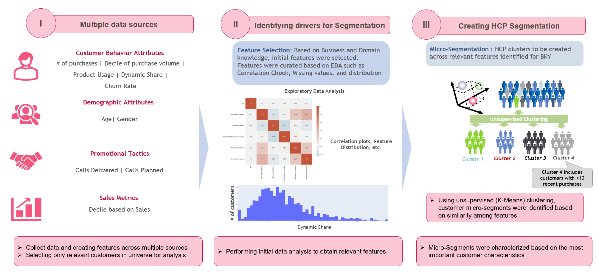
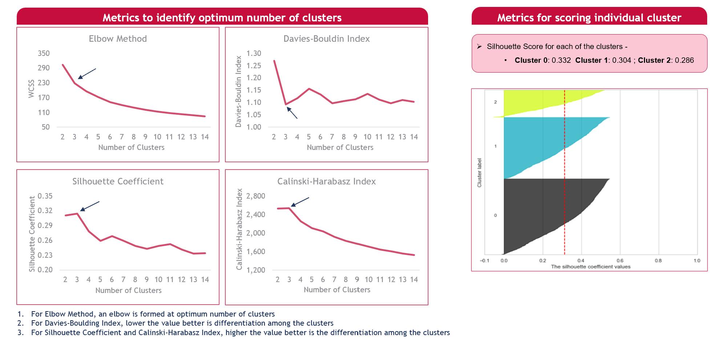

Clustering analysis for customer segmentation
Methodology
3 Clusters were found to be optimum based on multiple scoring metrics for K- means algorithm. However, a fourth cluster was added based on domain knowledge and business requirements. It consisted of any customers that had less than 10 recent purchases across all brand products.
